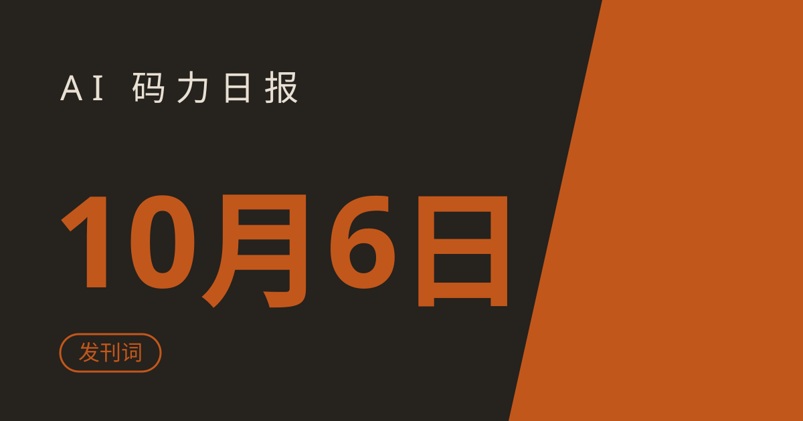

发刊词：为什么做一份 AI 程序员日报

发刊词：为什么做一份 AI 程序员日报
AI 编程工具的更新速度，已经超过了人类刷信息流的速度。
上周你还在学 Cursor 的新功能，这周 Windsurf 又发了大版本，GitHub Trending 上每天冒出几十个"下一代 AI IDE"，X 上每个人都在说"这个工具改变了我的工作流"——但你哪有时间一个个试？
信息过载时代，缺的不是信息，是可信的筛选。
这份日报做什么
每天早上 8 点，一篇日报，5 分钟读完。固定栏目：
- ⚡ 一句话速览——今日最重要的 3~4 条
- 🤖 今日 AI Coding 动态——模型、产品、公司的关键消息
- 🐑 今日羊毛——各大 AI 工具的免费额度、羊毛情报
- ⭐ 今日 GitHub 热门项目——值得 star 的开源项目
- 🛠️ 值得一试的工具——每天一个，附明确 verdict（值得试 / 观望 / 避坑）
- 🎓 3 分钟小教程——能复制、能运行的 mini 教程
- 🏆 周五加更：本周 Top 5 合集
三个承诺
- 每条必挂原文链接——摘要是我的，原文是你的，欢迎去验证
- 数据标注"截至撰写时"——star 数、价格都会变，不过期误导
- 宁缺毋滥——没料的日子就缩短篇幅，绝不硬凑字数
📡 建议 RSS 订阅，每天早上 8 点准时推送。 从明天起，正式日更。